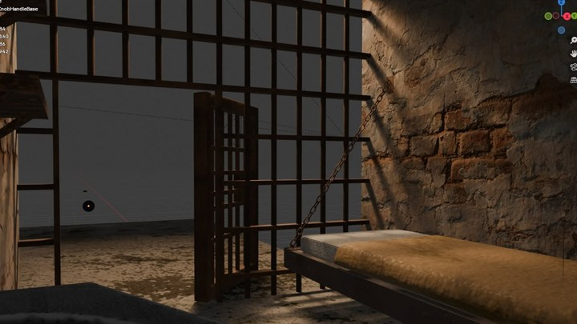
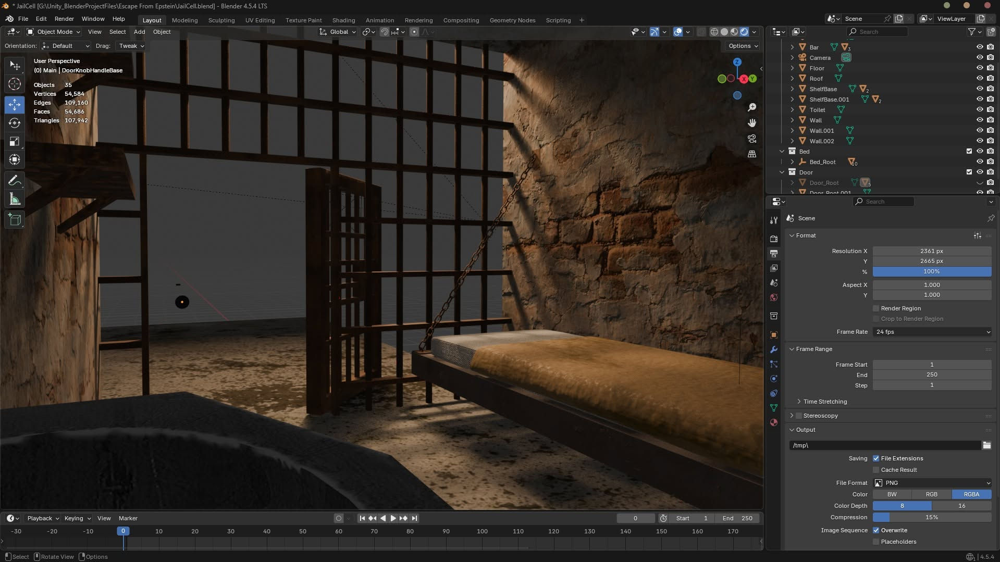

Prison Cell (3D Study) Prison Cell
Dự án dựng hình môi trường 3D và nghiên cứu ánh sáng đầu tay trên Blender. Khám phá kỹ thuật dựng hình hard-surface, xích treo, chất liệu PBR tường gạch tróc lở và vệt nắng xiên qua chấn song sắt. First 3D environment modeling and lighting study created in Blender. An architectural exploration of hard-surface modeling, chain rigging, photorealistic PBR wall texturing, and dramatic directional sunlight casting through cell bars.

Hình ảnh kết quả Visual showcase

Khung nhìn Blender 3D: Giường treo xích trợ lực, mảng tường gạch tróc vữa và bóng đổ tương phản xiên qua song sắt. Blender 3D Viewport: Suspended cot with tension chains, peeling plaster wall, and dramatic chiaroscuro window bar shadows.
Đúc kết & Trải nghiệm Retrospective & Takeaways
Ánh sáng Tương phản (Chiaroscuro) Directional Lighting
Đặt nguồn sáng mặt trời chiếu xiên qua song sắt ngục tối, tạo các vệt bóng chéo hình học đè lên chất liệu tường gạch gồ ghề để tăng tính điện ảnh. Positioned an angled high-intensity sun lamp casting through window bars, projecting dramatic geometric shadow bands across distressed brick masonry.
Chất liệu PBR & Tường gạch PBR Material Layering
Nghiên cứu phối hợp map độ nhám (Roughness) và độ lồi lõm (Normal/Displacement) giữa lớp vữa trát ngoài và gạch nung mục nát bên dưới. Explored multi-layer PBR roughness and normal mapping to realistically contrast outer crumbling plaster with damp underlying terracotta brick.
Cột mốc tự học 3D Foundation for Game Art
Bài tập thực hành đầu tiên đánh dấu bước chuyển mình tự học Blender nghiêm túc, tạo tiền đề để tự dựng asset cho các dự án game 3D và robot sau này. The first foundational project that marked a transition into serious Blender workflows, enabling custom 3D asset creation for later game and robotics projects.